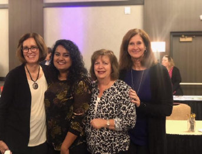
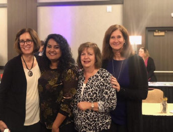

History Of The Lisle Woman's Club
Our purposes are to serve the community through fund-raising and philanthropy and to promote friendship among area women through club activities.
The Lisle Woman’s Club (LWC), chartered in 1963, is a member club of the General Federation of Women’s Clubs (GFWC)-Illinois and Illinois Fifth District.
The Lisle Woman’s Club started a Volunteer Public Library in 1964 in a basement on Main Street. LWC continued to operate the Library, while working with other groups and individuals for the formation of a tax-supported Lisle Library District.
The Library District was approved by Referendum in December 1965, and opened in September 1967. Throughout the Library’s progress LWC has remained vitally interested and we maintain our close relationship with the staff and programs
 
